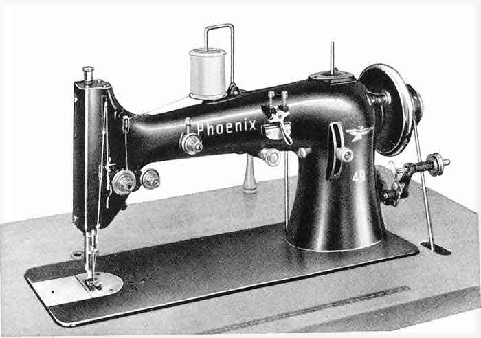

The NeedleBar
Baer & Rempel Class 49
1934
Large type, fast zigzag

© Alan Quinn 2003. All Rights Reserved
This page may not be reproduced or distributed in part or in whole without the prior written permission of the copyright owner